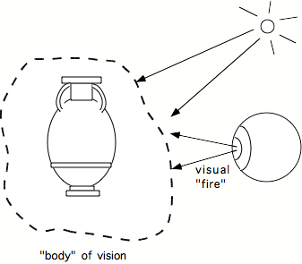
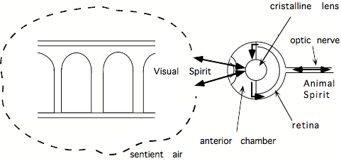

The nature of the light and the operation of the eye seem easy to understand for us today: our familiarity with cinema and photography gives us a feeling for light wich ix close to what contemporary physics teaches. People know that light propagates in straight lines and that it can be focussed by a lens to form an "image". People know that the eye functions like a camera, with an image of the outside world forming on the retina situated on the inside back surface of the ocular globe. But curiously, these concepts were very hard to come by. Thus, even though it should have been possible to understand the optics of the eye at the time of Euclid, 400 years before Christ, or at least at the time of Ptolemy (second century AD)[1], it was more than fifteen hundred years before an adequate theory of light and vision finally emerged. Why[2]?
One of the factors that contributed was probably the fact that four of the most respected thinkers of western civilization: Plato, Aristotle, Euclid and Galen, had all opted, in their own different ways, for an incorrect theory of vision.
Driving in the night, we sometimes see an animal surprised in the middle of the road by the headlights of our car. The animal looks up at us: its eyes are shining bright. We know today that the reason for this is that many nocturnal animals' retinas are backed by a reflecting layer called the tapetum, whose purpose seems to be to reflect light that has not already been absorbed by the photoreceptors back through them, thereby giving absorption a second chance and increasing sensitivity. Even without the tapetum however, some light is reflected back out the eyes. In humans this is often observed in flash photographs, where the phenomenon appears as the well-known "red eye" effect..
The ancient greeks had already noticed this "fire" gleaming in animals' eyes (Pliny the Elder in his Natural History mentions light emitted by cats, wolves and wild goats[3]). It must therefore have seemed natural to deduce that eyes must somehow contain or emit light. This erroneous conclusion was also compatible with other phenomena that the greeks had observed. For example, it explained why many animals can see well in the dark (their eyes act like spotlights!), and why, as noticed by Alcmaeon of Croton[4] in the fifth century BC, when the eye is tapped or pressed, you sometimes see light flashes. It also explained the phenomenon Aristotle mentions in On Dreams,[5] and that is known today as the phenomenon of afterimages: when you look at a strong light source, the light seems to persist for a while inside your eyes, even after you close them or look away. The Experimental Interlude 2., on "Experiments with fire in the eyes", shows how today we explain these phenomena in terms of chemical and neural persistance effects in the retina.
In any case, given such observations, it was natural for thinkers to deduce that there was some kind of light source in the eye, and to suppose that it was precisely this light that underlies vision: perhaps this light serves to "feel" the world like a blind man probes the world with his cane. Such an "extramission" theory of vision had the advantage of linking vision with the sense of touch, whose mechanism, operating through direct contact, seems intuitively easier to comprehend. The notion that vision involves the extramission of light rays also tallies well with people's naïve conceptions: many children and even some adults, believe that seeing involves something coming out of the eyes. I myself remember being very surprised as a child when I was told that light comes into my eyes rather than going out of them. Perhaps a loosely related fact is the mistake that many young children make of hiding their eyes so as not to be seen: apparently like ostriches, they think that if you can't see someone, then they can't see you. In any case, popular expressions like "piercing eyes", "evil eye", etc., confirm that the idea of extromission has a firm hand on the popular mind. Many people think they can "feel" on their backs when someone is looking at them from behind. Leonardo da Vinci mentioned in his Codex Atlanticus that clearly some force must come out of the eyes since: "it is well known that young maidens have the power, with their eyes, to enrapture young men!"
What is unfortunate for the history of visual science is the fact that the idea of extramission was associated with the illustrious name of Plato (428-348 BC). Indeed Plato and before him Pythagoras (c. 532 BC), were the first to seriously propound the extramission theory. For Plato[6], the substance that was emitted by the eye was a kind of gentle "visual fire" or light, flowing forth out of the pupil, that combined with ambient light to generate a homogeneous "body of vision" (like a kind of disembodied tentacle controlled by the eyes) which encompassed or touched objects and thereby generated a medium between the object and the viewer which allowed aspects of the object to contact the soul.

Plato's extramission theory. A smooth, gentle
"fire" is emitted by the eye and fuses with ambient light to form a
sentient "body of vision". The idea for this and the following
figures came from Grüsser, 19XX.
Given Plato's great authority, the extramission viewpoint was adopted, with variations, by many thinkers after him. Of particular importance was its acceptance in the 2nd century AD by the great physician Galen, whose doctrines were to dominate medical thought throughout the middle ages. As we shall see below, up until the 17th century, the influencial medical community was wedded to the extramission hypothesis.
But in addition to weighing with his authority toward the extramission viewpoint, Plato probably contributed in other ways to hindering progress in the study of vision. One form of general hindrance created by Plato was not specific to his theory of vision, but derived from his general approach to science: in his opinion, observation of nature was a worthless pursuit -- progress could only come from logical reasoning and mathematical deduction. A more specific hindrance is suggested by one contemporary historian of science[7], who claims that for Plato, vision was not a very reliable sense. The "touch-at-a-distance" provided by vision was a poor relative of true manual touch. After all, contrary to the normal tactile sense, vision does not allow a whole object to be apprehended, since parts of it are always hidden from view. Judgements based on vision are subject to many types of errors, like those caused by changes in lighting and perspective viewpoint, by extraneous phenomena associated with shadows, transparency, reflection and refraction for example, not to mention the many well-known 'optical illusions' that give rise to errors in size and position judgement. In sum, for Plato, vision was unfit for doing science: tactile confirmation of visual impressions was essential.
Perhaps an example of Plato's negative influence on the pursuit of optical science is the history of lenses. It has been argued[8] that, like hypnotism and paranormal phenomena today, the study of lenses was considered a disreputable pursuit in the Middle Ages. Even though magnifying lenses were probably used by craftsmen at least as early as the beginning of the christian era to make miniatures or to carve fine inscriptions on the moulds used to cast coins, and even though, starting in the 13th Century, a whole industry of artisans was manufacturing spectacles for correcting presbyopia (and later, myopia), it took another three hundred years until scientists deigned to study them. Even Kepler, in his revolutionary book Paralipomena published in 1604, merely devotes three pages to lenses, and then apologetically, with the justification that a mycene had been prodding him for three years to consider them[9]. Only when Galileo's discoveries with the telescope caused a sensation and rendered more politic the serious consideration of lenses, did Kepler finally deign to give them proper treatment in his Dioptrica, published in 1609.
But even then, Plato's influence remained powerful, and years of struggle were necessary before scientists accepted the idea that observations made through optical devices might be veridical rather than illusory. For example, many of Galileo's colleagues either refused to look through the telescope, or when they did, said that they saw nothing but 'illusions created by the devil', or that they simply felt dizzy[10]. Similarly, it took decades of the 17th Century for people to take seriously Leeuwenhoek's incredible reports of miniature creatures visible through his microscope...
After the decline of the ancient greek and roman civilisations, and with the rise of Christianity in Europe, the rich scientific heritage accumulated by the greeks was gradually forgotten. Knowledge of the greek language, necessary to read the old manuscripts, was no longer part of every man's education -- in fact many scholars had enough trouble learning latin! The 'pagan' philosophies went out of favor and were ultimately officially banned by an edict of the christian emperor Justinian in 529. The Hippocratic corpus, the manuscripts of Plato, Aristotle, Euclid, were dispersed or lost; in Alexandria, the civilised world's greatest library, supposedly with 500.000 manuscripts, was burnt, destroyed or disbanded. Arthur Koestler says: "Insofar as science is concerned, the first six hundred years of established Christendom were a glacial period (...)"[11]
It was the arabs who finally broke the ice, starting around the end of the 8th Century. When Islam stabilized itself as the dominant force in the mediterranean, it's leaders began to see the advantage of restoring a scientific tradition, and launched a quest to recuperate the lost knowledge. Sponsored by the ruling caliphs, some of those rare scholars who spoke greek because they belonged to greek-speaking religious sects (they were often jews or Nestorian or Jacobite christians), scoured the mediterranean for scattered surviving greek manuscripts and translated them into their local languages, mainly arabic, syriac, and hebrew. Discovering an ancient manuscript, with its treasure of astronomical, mathematical, medical, or philosophical learning must have been as exciting an event as sailing to new continents in the age of discovery or as detecting intelligent extraterrestrial life would be today... Imagine discovering the precious "Almagest" of Ptolemy, a work explaining how measurement of latitude and longitude would permit heretofore unknown precision in navigation, and whose astronomical tables allowed heretofore impossible predictions of astronomical events: they permitted the important calculation of the direction of Mecca, and of the length of lunar months, necessary for determining the hours of prayer. Discovering the logic of Aristotle, the mathematical knowledge of Pythagoras and Euclid, the indian methods of algebraic calculation (including the invention of the number zero) and combinatorics, substantially facilitated commerce and solved problems associated with the division of land or inheritances; and of course there were also the invaluable medical compendia of Hippocrates, Galen, Celsus and Rufos... We can understand why emirs and caliphs vied with each other to obtain these precious documents and have them translated.
But the translations of the greek texts were in most cases of poor quality, simply sequentially rendering each word of the text, word by word, without regard to syntax and idiom[12]. Thus, the process of re-acquiring the lost knowledge, though familiarizing scholars with the old theories, also tended to become polarized around the problem of interpreting the meaning of the classical texts. This was doubly true when christianity took the place of islam as the dominant religion in Europe, and the need now arose of translating not the original greek texts, which were unavailable, but the already mangled arab, syriac or hebrew texts into yet another language, namely latin, the new lingua franca. After a second translation (or rather word for word rendering), one can imagine the difficulty of interpretation, particularly for scholars whose notions of latin were already imperfect! One can understand why "science" in the Middle Ages was done in the "scholastic" (that is, school-like) manner: philosophers simply carried out readings and commentory of classical texts -- most often those of the great Aristotle. A factor that favored scholasticism was the fact that certain notions, for example Aristotle's idea of the immutability of the universe (i.e. not created in seven days as claimed in the Bible!), were contradictory with christian dogma, and infinite time could be spent in the nitpicking necessary to contrive interpretations that saveguarded the Faith without questioning the authority of the ancient greek masters.
Still more important than Plato in shaping the way visual science was done in the Middle Ages, was the influence of Plato's brilliant student Aristotle. Like Plato, Aristotle acted in several ways to hinder progress in the study of vision. The first aspect of Aristotle's negative influence was indirect, through the fact that his authority was so great that it hampered critical thought.
In addition to his monumental contributions to ethics, logic, mathematics, metaphysics, rhetoric, political science, Aristotle had devoted his life to minute observation of nature: meteorology, biology, botany, anatomy, physics, chemistry.... His attention to detail was such that the satirist Lucian said of him in the 2nd century BC: "he will teach you how long a fruitfly lives, how far the sun penetrates into water, what kind of soul oysters have..."[13]. Aristotle's approach to science was similar to ours today, based on careful observation and reasoning, but with the difference that he placed more emphasis on observation of nature and theoretical considerations than on experimentation under controlled conditions. He made some mistakes, as when he claimed that women have fewer teeth than men, and that the purpose of the brain was, through its many blood vessels, to cool the passions of the heart, where he assumed that the soul resided (remnants of this idea have survived until today in the form of expressions such as "memorizing by heart", having a "broken heart", "heartfelt thanks")[14]. The main problem with Aristotle, however, was the immense respect that he commanded in the Middle Ages. and that somehow, paradoxically, made people forget that his approach was essentially empirical. Since Aristotle was the absolute authority, and thinkers of the Middle Ages considered his claims to be unshakeable truths, scholastic disputation about interpretations of Aristotle rather than empirical investigation became the main preoccupation of scholars. Instead of trying to understand Nature, scholars tried to understand Aristotle.
The second, more direct, way Aristotle hindered progress in the study of vision was related to his theory of vision. Aristotle vigorously denied Plato's idea that a substance was emitted by the eye (how could the eyes, which are small, emit a cone of substance large enough to reach the stars, and how could this cone extend instantaneously?). Aristotle's main emphasis was on the transparency of the medium between the eye and the object. The liquid inside the eye is transparent, he argued, like the air outside. Together they form a common medium which is able to sense the nature of the objects which lie within it. There is no propagation of information through the medium, but rather the medium as a whole, including the eye, itself becomes sentient. To the extent that this process of sensing the nature of objects, or of sharing the vibrations that they produce in the air, resembles a form of touch, Aristotle's theory resembles Plato's, but without the notion of extramission.
The notion of transparency and the idea that it is the transparency of the liquid within the eye that underlies vision, profoundly marked future generations. When it was later discovered (probably around 300 BC by the anatomist Herophilos in the medical academy of Alexandria) that the eye contained within it a striking jewel-like entity, namely the crystalline lens, this captivated the imagination of all subsequent workers, and the crystalline lens became the obvious candidate for the essential seat of vision. Anyone who has held the crystalline lens in their hands and admired its transparent beauty and simplicity can understand that once the notion had seized the minds of scientists that the crystalline lens is the seat of vision, it was hard to flush out. As we shall see below, the notion was also later adopted by the great physician Galen, who, by weaving the additional idea of visual pneuma into his account of the mechanism of vision, constructed such an attractive story that it survived fourteen centuries of critical thought.
If Aristotle dominated science, logic and philosophy in the middle ages, then Euclid commanded mathematics. Euclid had worked in about 300 BC in Alexandria, the great cosmopolitain center that rivaled Athens after the death of Alexander the Great, and where for several centuries greek and egyptian culture came together into a fertile blend. Euclid's most cited work, "The Elements", organises the contributions of his predecessors into an axiomatic system, creating that same geometry of the plane and of solids that we all learn at school ("A point has position but no extent"; "A line has length but no width", The five regular polyhedrons, etc...)
Euclid's contribution to vision (the "Optica") was actually a theory of light, not vision. Though he adopted the extramission theory to the extent that he maintained that "visual rays" exit forth from the eyes, this was not vital to the theory, which was essentially a system of mathematics, concerned with the geometrical properties of light rays. This theory formed the basis of navigation methods, of perspective and of astronomy, for more than two millenia, and is still essentially valid today. The theory allowed Hero of Alexandria (fl. 62 AD) in his "Catoptrica" to understand the paths of light rays reflected by flat and curved mirrors. It was the basis of the astronomer Ptolemy's (also working in Alexandria in 127-145 AD) work on refraction ("Dioptrica"), that is, the way light changes its path when it crosses the interface between two different transparent materials . In the middle ages, Euclid's optics were the basis of perspective and the laws of the formation of shadows. But then why, with this excellent tool, was it not possible to understand the formation of the image within the eye? Paradoxically, the answer probably lies precisely in the fact that Euclid's theory was so successful: Euclid's geometrical optics were so useful that thinkers tended also to adopt Euclid's primary postulate that went with it, namely that the eye emits rays. An image inside the eye was thus inconceivable. This one error of Euclid's was yet another factor that compromised optical science for two millenia!
Public hygiene in the early days of the Roman civilisation was sophisticated, with advanced water supply and sewage systems providing baths, fountains and toilets in public and private residences. On the other hand, medecine was not highly developed, being just another preoccupation of the head of the family, who, at the same time as he disciplined the slaves and organised the household, would dispense a few standard remedies most often involving cabbage (or even using the urine of someone who had eaten cabbage) or ram's wool soaked in oil, pitch, vinegar, sulphur, etc [15]. In about the first century BC[16] however a disorganised and unregulated medical profession began to develop, with quacks of all kinds practising in small boutiques in the streets of Rome and using all available methods to attract clients, including telling them dirty jokes. Greek doctors were particularly appreciated, so that roman doctors sometimes faked greek origins to appear more authentic[17]. Nevertheless there was great mistrust of doctors. For example the first-century roman poet Martial said: “You are now a gladiator, although until recently you were an ophthalmologist. You did the same thing as a doctor that you do now as a gladiator.”[18] .
The Roman emperor Marcus Aurelius must have been glad to come across a young greek physician from Pergamum (in what is now the west coast of Turkey), who seemed more competent than the average: Claudius Galenus (c. 129 - c. 199 AD) had traveled widely throughout the Mediteranean, and, after attending the medical academy in Alexandria, finally settled in Rome just after 160 AD. Favored by Marcus Aurelius and his followers, Galen was to become the "Prince of Physicians", emulated by islamic and christian doctors throughout the Middle Ages and the Renaissance. He is said to have continually kept with him a group of scribes to set down his every word, and wrote about 400 philosophical and literary treatises in addition to about 100 medical works. What is important about Galen is that his work survived the transition to the Middle Ages better than most: his writings were encyclopaedic. In addition to his own valuable contributions, notably in anatomy, Galen's work also had the merit of summarizing the work of the Hippocrates, the father of medecine, and of the Alexandrian anatomist Herophilos, who was virtually the only anatomist to have dissected humans before the 16th Century. Thus it is natural that Galen's work was among the first greek works to be "re-discovered" and to be translated into latin[19]. In fact Galen's anatomy was so influencial that it remained the major and the undisputed reference throughout the Middle Ages, until it was supplanted by Vesalius (see Ch. 3) in the 16th Century. This is the more surprising when one considers that Galen presented his anatomy as being representative of human anatomy, and yet it was mainly based on dissection of pigs and monkeys, since human dissection was disallowed (see Ch. 3)! Thus Galen's facts were in many places inaccurate.
Another problem with Galen was his system of beliefs. By jumbling together all the explanatory concepts of antiquity, Galen created a weighty assemblage of doctrines that, though often incoherent and inefficacious, had the great advantage of mystifying generations of patients and maintaining respect for the medical profession[20]. He adhered to the idea[21] that the world is composed of four elements: air, fire, water and earth, and that illness arises from a disequilibrium between them. He adopted and promulgated the theory of the four temperaments and their associated humors (blood, phlegm, black bile (melancoly) and yellow bile (or choler)), which formed the basis of medecine until recently, and whose trace is still present in our everyday parlance ("choleric", "bilious", "phlegmatic", "sanguine"). Galen also espoused the theory of "pneuma" proposed by the stoic philosophers, that postulates that different types of pneuma, or "air" or "wind" or "spirits", composed of air and fire, circulate throughout the body and determine its vitality[22].
What concerns us here is Galen's theory of vision, which seems to have been particularly resistant to criticism, perhaps because it was an eclectic theory that pandered to most of the current opinions, thereby captivating the imagination, warding off doubt and discouraging empirical verification. Galen had retained the idea of Plato and of the extramission theorists according to which vision was a sort of touch, in which the perceiving medium was the air itself. He had also adopted Aristotle's idea that it is the transparent material inside the eye which constitutes the seat of vision. But unlike Aristotle, he knew the crystalline lens and therefore attributed the essential role to it rather than to the vitreous humor. For Galen, visual perception involved the circulation of "visual spirit" through the crystalline lens to obtain information from the world and bring it back into the lateral ventricles of the brain, where the sentient soul supposedly resided.

What was unfortunate in this description of the process of vision, was that Galen had committed two important errors: he had localised the crystalline lens at the very center of the eye[23], and he had assumed the optic nerve to be hollow. Putting the crystalline lens at the center of the eye gave it what was symbolically the most important position, like the earth at the center of the universe -- this was natural for what was considered the seat of vision. But for understanding vision, this error prevented the lens from being considered a mere part of the focussing apparatus which brings light to the retina. The second error, the fact that Galen thought the optic nerve was hollow, was noxious because it so clearly comforted the idea that there was indeed an "animal spirit" which flowed inside it.
For 15 centuries these two errors were reproduced in all the anatomy treatises by arabic and european authors, without exception[24]. For the history of visual science these errors were particularly insidious because they were anatomical in nature, precisely the field where Galen could not be questioned. Presumably it was Galen's authority as an anatomist, and through him, the authority of Hippocrates and Herophilos, that prevented verification of his claims, and led centuries of thinkers to favor the extramission hypothesis. In Chapter 3 I will suggest another possible explanation for the error concerning the position of the crystalline lens, related to cataract surgery.
Against the powerful currents of medical thinking (in the case of Galen) and mathematical thinking (in the case of Euclid and Ptolemy) which both likened vision to the sense of touch, and which assumed the existence of some kind of emanation from the eyes, is situated the intromission theory, maintained by a line of philosophers beginning with the atomists (600-400 BC) But this opposing current of thought did not have such illustrious names as Plato, Aristotle and Euclid to its credit, nor did it have Galen to ensure its public relations: we can understand why this current was under a disadvantage.
In the intromission theories it was supposed that objects emitted minute images or replicas of themselves, called "eidola" (Democritus (c. 460-c. 370 BC); Epicurus (341-270 BC)); or else it was supposed that the surface of objects detached itself like the skins of molting snakes or insects, into thin films called "simulacra" (Lucretius (1st Century BC)), which entered into the eye. Bearing the imprint of the original objects like an impression in wax, the eidola or simulacra evoked the perception of these objects. Note that the simulacra were very different from the light rays or photons that physicists know today, because they had the property that they were capable of informing the mind about the nature of the objects they came from. No one had had the idea that an 'image' might be formed by reuniting the rays emanating in all directions from every point of an object. And if they had had such an idea, they would have rejected it imediately, since if the image was two-dimensional, how could it give the information about volume that vision provides?
Intromission theories, involving the reception of impressions of external objects were also open to attack by other persuasive arguments.... How could the films emitted by objects pass into the small opening of the pupil, even when they corresponded to very large objects like elephants or mountains? And once shrunken enough to pass into the eye, how could they then give an indication of their original sizes? And how could this apparent size vary as it is observed to do as the distance from the object varies? And how could the relative positons of objects be correctly maintained once they have all penetrated into the eye and become mixed up? And then, if the simulacra represents the whole object, how is it that parts of an object can appear to be hidden from view, as when it is seen in profile? And anyway, the intromission theory must be false, since objects seen in peripheral vision should, if they are seen at all, be seen as well as objects that are looked at directly -- which is not the case: peripheral objects are seen less distinctly[25].
Given such difficulties the most generally accepted theory of vision was therefore some version of an extramission theory. Nevertheless there was great debate on the matter. From the time of the pre-socratic philosophers around 600 BC, through the period which opposed atomists, Plato, Aristotle, Euclid and the geometers, through Galen in Rome around 100-200 AD, and beyond through the period of arabic science in the 9th to 12th Centuries with Al Kindhi and Al Hazen, and through the christian thinkers of the 13th and 14th Centuries with Robert Grosseteste and Roger Bacon, the same debate was repeated. For more than 2000 years, there was no real progress. The notion of the two-dimensional "image", ultimately to be introduced by Johannes Kepler, was missing.
[1]Euclid had put forward a theory of light propagation, still now considered essentially correct, in which he proposed that light travelled in straight lines. Furthermore, the astronomer Ptolemy (127-151), whose geocentric universe was later overthrown by Copernicus' and Galileo's heliocentric theory, had in his 'Dioptrics', correctly shown how light alters its course as it passes from one transparent medium to another. Indeed Ptolemy had studied the path of light rays through glass or water-filled spheres, and one might have thought that he would have noticed the similarity to the eye. As concerns anatomy on the other hand, the structure of the eye had been studied by Herophilos and was in any case accessible to anyone willing to wield a dissecting knife. Overall therefore, even before the Christian era it should in principle have been possible to understand how an image might be formed by the eye.
[2]A. Koestler's fascinating book "The Sleepwalkers",is devoted to the similar question of why it took so long to re-discover (after Aristarchus) the heliocentric universe. His book is another, much more complete, testimony of how scientists can be blinded by the obvious.
[3]cf Lindberg p. 88/9.
[4]according to Theophrastus .cf Lindberg p. 4/5
[5]cited by S. Finger, p. 68.
[6] Timaeus . cf Lindberg p. 5)
[7]V. Ronchi
[8]V. Ronchi
[9]Again I am paraphrasing V. Ronchi here. On the other hand, Crombie notes that in fact Grosseteste and his student Roger Bacon had considered refraction of light at curved surfaces and had written on the subject of how this could be used to create magnifiying lenses. Nevertheless it does seem that until Kepler, no one had attempted to understand myopia and heropia and how concave and convex lenses could be used to overcome them.
[10](acc to Meadows, p 40 : cf also Koestler p. 374.
[11]The complete quote is: "Insofar as science is concerned, the first six hundred years of established Christendom were a glacial period with only the pale moon of Neoplatonism reflected on the icy steppes" Only the Neoplatonic current of greek thought seems to have retained the favor of the christian thinkers, and was preserved: The sleepwalkers, p. ???
[12]The extreme literalism of the medieval translators was not simply a matter of unfamiliarity with the language being translated, but a sign of reverence for the authors whose texts were to be rendered as faithfully as possible. The roman philosopher and statesman Boethius (c. 480-c.524), translating Aristotle from the greek, had stated that it was good to sacrifice elegance for fidelity, and this ideal had become the standard for translation in the middle ages, accepted even by the best and most productive translators, such as Gerard of Cremona (xxxx-yyyy), William of Moerbeke (c. 1215-c.1286) and Robert Grosseteste (c. 1175-1253)[12] . Sometimes, when the translator did not find the exact equivalent of a word, he would simply transliterate it into roman orthography, thereby introducing the greek or arabic term into the western vocabulary. (cf Lindberg article on translation, p. 78)
[13]quoted by Meadows
[14]S. Finger, in Origins of Neuroscience. Oxford University Press, Oxford, 1994,.
[15](according to Cato the Elder. cf . http://www.med.virginia.edu/hs-library/historical/antiqua/textj.htm).
[16]check...
[17]cf book in TGB
[18](Martial, Epigrams 8.74)
[19]Thanks to translations from the greek, made in Ravenna in the 5th to 7th Centuries, and thanks to arab translations made by Nestorian and Jacobite Christians in Syria in the 8th and 9th Centuries (particularly by Hunain ibn Ishaq and his relatives, who translated about 100 Galenic works), and finally re-translations from arabic into latin in the 12th and 13th Centuries in muslim Spain (particularly Gerard of Cremona) and in Italy and Sicily[19], the medical writings of Galen survived the period of intellectual repression that followed the decline of the roman empire. After further diffusion following the invention of the printing press, Galen remained the author of reference in anatomy until Vesalius supplanted him in the 16th Century, and he continued to influence medecine with his pneumatical views until the 19th Century.
[20]I would like to include here some examples from Chaucer or Shakespeare, ricdiculing Galenist notions. Molière in his "Le médecin malgré lui" of course is mocking the medical profession.
[21], generally attributed to Empedocles (5th Century BC), and jpresent in traditional arab and chinese mediecine,
[22]This view was also related to the Egyptians' way of thinking about human life, which involved the notion of 'spirit' or what they called 'wind' or 'air', and which was purported to circulate through the different canals of the body and ensure its health and vigor. For Galen, there was first an unrefined "natural spirit" originating in the liver, the organ where food from the stomach was assumed to be transformed into blood. The natural spirit was transported by the veins to the heart, where it was refined by the air supposedly contained in the pulmonary veins (!) and transformed into "vital spirit". The visual spirit, transported by the arteries, vitalised the whole body. In a ramified structure at the base of the brain (the rete mirabille ("wonderful net")[22] it was further refined into the highest spirits, the "animal spirits", by mixing with the air breathed in through the nose and which also circulated in the olfactory bulb and the olfactory nerves. The animal spirit, stored in the ventricles of the brain, was used to move the muscles by being propulsed along the (supposedly hollow) nerves by a pulsating action similar to that of the heart.
[23]Actually Galen is not consistent about where he localises the crystalline lens, sometimes locating it further forward. cf Lindberg.
[24]cf Lindberg
[25](Al Kindhi cf Lindberg p. 22)(Give authors of args)